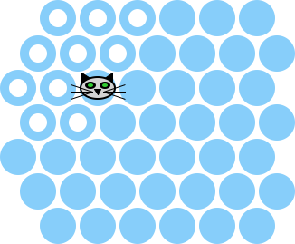

1.18.5 The Cat’s Path
Once we have a breadth-first search all sorted out, we can use it to build a function that determines where the shortest paths from the cat’s current position to the boundary are.
The function on-cats-path? accepts a world and returns a predicate on the posns in the world. The predicate indicates if the given posn is on the shortest path.
For example, in a world of size 7 with the cat at (make-posn 2 2), the circles with white centers are on the shortest path to the boundary:

So we can formulate two test cases using this world, one in the white circles and one not:
(let ([on-the-path? (on-cats-path? (make-world (empty-board 7) (make-posn 2 2) 'playing 7 #f #t))]) (test (on-the-path? (make-posn 1 0)) #t) (test (on-the-path? (make-posn 4 4)) #f))
The computation of the shortest path to the boundary proceeds by computing two distance maps; the distance map to the boundary and the distance map to the cat. Then, a node is on one of the shortest paths if the distance to the cat plus the distance to the boundary is equal to the distance from the cat to the boundary.
The code is essentially that, plus two other special cases. Specifically if the “h” key is not pressed down, then we just consider no cells to be on that shortest path. And if the distance to the cat is '∞, then again no nodes are on the path. The second situation happens when the cat is completely boxed in and has lost the game.
(define/contract (on-cats-path? w) (-> world? (-> posn? boolean?)) (cond [(world-help? w) (define edge-distance-map (build-bfs-table w 'boundary)) (define cat-distance-map (build-bfs-table w (world-cat w))) (define cat-distance (lookup-in-table edge-distance-map (world-cat w))) (cond [(equal? cat-distance '∞) (λ (p) #f)] [else (λ (p) (equal? (+/f (lookup-in-table cat-distance-map p) (lookup-in-table edge-distance-map p)) cat-distance))])] [else (λ (p) #f)]))
Finally, the helper function +/f is just like +, except that it returns '∞ if either argument is '∞.